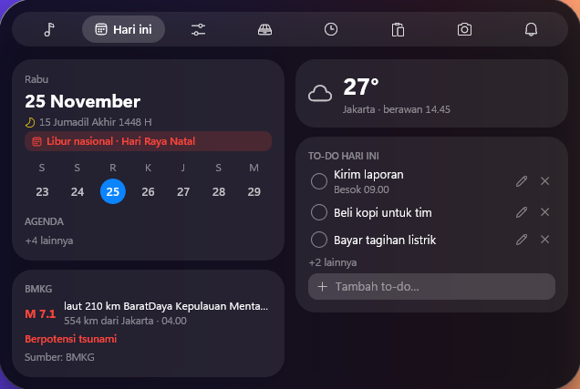
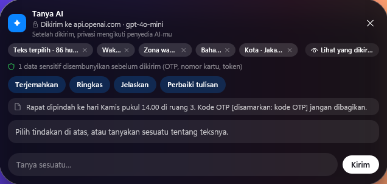
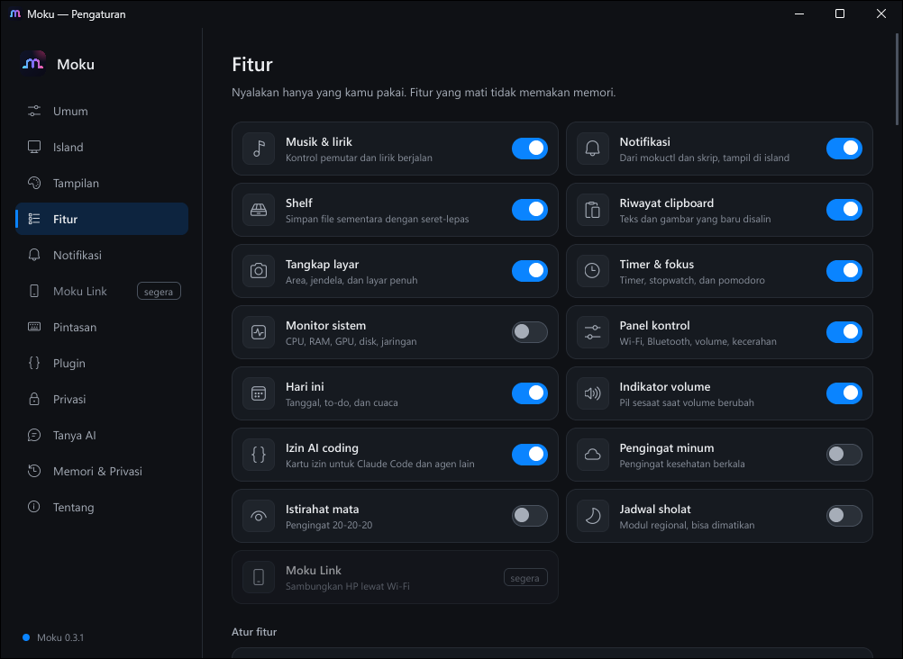

Pulau kecil di tepi layar Windows-mu. A small island at the edge of your Windows screen.
Musik, timer, notifikasi, dan izin dari agen coding muncul di satu tempat, lalu menyingkir saat tidak dibutuhkan. Gratis, open source, tanpa akun. Music, timers, notifications and permission requests from coding agents show up in one place, then get out of the way. Free, open source, no account.
Lirik yang menyala kata demi kata.Lyrics that light up word by word.
Moku membaca lagu dari aplikasi apa pun yang memakai kontrol media Windows, lalu mencari liriknya di LRCLIB. Sorotannya menyapu kata demi kata mengikuti lagu. Kalau yang muncul lagu lain, tekan “Bukan lagu ini” dan pilihanmu diingat. Moku reads the song from any app that uses Windows media controls and looks the lyrics up on LRCLIB. The highlight sweeps along word by word with the music. If it is the wrong song, press “Bukan lagu ini” and your choice is remembered.
- Sumber lirikLyrics source
- LRCLIB, database terbuka dari komunitasLRCLIB, an open community database
- Biaya CPUCPU cost
- Hampir nol: sapuannya digambar kartu grafis, bukan diulang tiap frameClose to zero: the sweep is drawn by the GPU compositor, not redrawn every frame
Timer yang tetap kelihatan.A timer you can always see.
Pomodoro, timer, dan stopwatch hidup di pil. Selama ada yang berjalan, island tetap tampil. Saat tidak ada apa-apa, ia bisa bersembunyi dan muncul lagi begitu kursormu menyentuh tepi atas. Pomodoro, timers and a stopwatch live in the pill. While something is running the island stays up. When nothing is going on it can hide, and returns as soon as your pointer touches the top edge.
- Mode sembunyiHide mode
- Mati, hanya saat idle, atau selalu sampai tepi atasOff, only when idle, or always until the top edge
Kabar penting datang sendiri.Important news finds you.
Gempa dan peringatan tsunami dari BMKG, waktu sholat dengan hitung mundur berbuka, libur nasional, kurs, dan kualitas udara. Peringatan tsunami selalu tampil, bahkan di atas aplikasi layar penuh. Earthquake and tsunami alerts from BMKG, prayer times with an iftar countdown, public holidays, exchange rates and air quality. A tsunami warning always shows, even over a full-screen app.
- Data dariData from
- BMKG, Open-Meteo, Frankfurter
- Hanya jika dinyalakanOnly when switched on
- Fitur yang mati tidak membuat permintaan apa punA switched-off feature makes no request
Izin untuk agen coding, tanpa pindah jendela.Permission for coding agents, without switching windows.
Claude Code, Codex CLI, dan Gemini CLI meminta izin lewat kartu di island. Satu klik, lalu agennya lanjut. Saat selesai kamu dapat pil singkat dengan lama kerjanya. Claude Code, Codex CLI and Gemini CLI ask for permission through a card on the island. One click and the agent carries on. When it finishes you get a short pill with how long it took.
- “Selalu izinkan”“Always allow”
- Mati secara default, dan hanya cocok dengan perintah yang persis samaOff by default, and only matches the exact same command
Tanya AI yang jujur soal datamu.An AI helper that is honest about your data.
Pilih teks di aplikasi apa pun, tekan Ctrl+Alt+A, lalu terjemahkan, ringkas, atau jelaskan. Pakai penyedia yang kamu mau. Kartunya menunjukkan persis apa yang dikirim dan ke mana, dan kode OTP, nomor kartu, dan token disamarkan lebih dulu. Select text in any app, press Ctrl+Alt+A, then translate, summarise or explain. Use any provider you like. The card shows exactly what is sent and where, and one-time codes, card numbers and tokens are masked first.
- PenyediaProviders
- OpenAI, OpenRouter, Groq, Gemini, DeepSeek, Ollama, LM Studio
- Kunci APIAPI key
- Disimpan di Windows Credential Manager, tidak pernah di fileKept in Windows Credential Manager, never in a file
- MemoriMemory
- Dienkripsi untuk akun Windows-mu, hanya di PC iniEncrypted for your Windows account, on this PC only
Menyingkir saat kamu butuh layarnya.Steps aside when you need the screen.
Kalau kursormu menuju address bar browser, island memudar atau bergeser, dan kliknya tembus ke bawah. Ia kembali begitu kursor menjauh. Video layar penuh dan game juga menyembunyikannya. When your pointer heads for the browser address bar, the island fades or slides away and clicks go through to what is underneath. It returns once you move off. Full-screen video and games hide it too.
- Memori saat diamIdle memory
- Sekitar 45 MB dan 0% CPUAbout 45 MB and 0% CPU
Dan perkakas kecil lainnya.And a few more small tools.
- Launcher Alt+Space: cari aplikasi, hitung, tambah to-do, mulai timer.Alt+Space: find apps, calculate, add a to-do, start a timer.
- OCR layar Seret area di layar, teksnya tersalin. Dibaca di PC-mu.Drag an area of the screen and the text is copied. Read on your PC.
- Clipboard Riwayat teks dan gambar, dengan aksi cerdas dan penjaga kode OTP.History of text and images, with smart actions and an OTP guard.
- Shelf Taruh file sementara di island, lalu ubah formatnya.Park files on the island and convert their format.
- Kirim ke HPSend to phone Lewat kode QR di Wi-Fi yang sama, ditolak di jaringan publik.Via a QR code on the same Wi-Fi, refused on public networks.
- Mixer volumeVolume mixer Atur volume per aplikasi dan lihat baterai earbuds.Set volume per app and see earbud battery.
- Kalender Alamat ICS dari Google atau Outlook, tanpa OAuth.ICS addresses from Google or Outlook, no OAuth.
- Notifikasi WindowsWindows notifications Muncul di island, kode OTP disamarkan.Shown on the island, one-time codes masked.
Tidak ada server. Tidak ada akun. Tidak ada pelacakan.No server. No account. No tracking.
- Semua datamu ada di
%APPDATA%\Moku, di PC ini saja.All your data lives in%APPDATA%\Moku, on this PC only. - Satu-satunya lalu lintas keluar berasal dari fitur yang kamu nyalakan: cuaca, lirik, cek pembaruan, dan penyedia AI pilihanmu.The only traffic out comes from features you switch on: weather, lyrics, update checks and the AI provider you choose.
- Pakai Ollama atau LM Studio untuk Tanya AI, dan tidak ada teks yang keluar dari PC-mu sama sekali.Use Ollama or LM Studio for the AI helper and no text leaves your PC at all.
- Daftar lengkap setiap layanan, kapan dihubungi, dan apa yang dikirim ada di kebijakan privasi.The full list of every service, when it is contacted and what is sent is in the privacy policy.
Dari dekat.Up close.



Pasang dalam semenit.Installed in a minute.
-
Unduh
moku-setup.exe. Pemasangnya hanya untuk akunmu, tanpa hak administrator. Downloadmoku-setup.exe. It installs for your account only, no administrator rights. - Jalankan. Windows SmartScreen mungkin memperingatkan karena Moku belum punya tanda tangan kode: pilih “More info”, lalu “Run anyway”, atau cocokkan SHA-256 di bawah. Run it. Windows SmartScreen may warn because Moku is not code-signed yet: choose “More info”, then “Run anyway”, or compare the SHA-256 below.
- Island muncul di tepi atas layar. Klik kanan ikon di tray untuk membuka Pengaturan. Pembaruan berikutnya datang dari dalam Moku. The island appears at the top of your screen. Right-click the tray icon for Settings. Later updates arrive from inside Moku.
Pertanyaan yang sering muncul.Common questions.
Apakah Moku gratis?Is Moku free?
Ya. Moku adalah perangkat lunak bebas di bawah GPL-3.0. Kamu boleh memakai, mempelajari, mengubah, dan membagikannya. Versi ubahan yang dibagikan harus tetap terbuka, mencantumkan kredit ke repo resmi, dan memakai nama serta logo sendiri.Yes. Moku is free software under the GPL-3.0. You can use, study, change and share it. A modified version you share must stay open, credit the official repository and use its own name and logo.
Kenapa Windows memperingatkan saat memasang?Why does Windows warn me when installing?
Rilisnya belum ditandatangani dengan sertifikat kode, dan file baru belum punya reputasi di SmartScreen. Bukan deteksi virus. Setiap rilis dibangun otomatis di GitHub Actions dari kode yang terbuka, dan kamu bisa mencocokkan SHA-256-nya. Kami sudah mengajukan penandatanganan kode gratis untuk proyek open source.The release is not code-signed yet and a new file has no SmartScreen reputation. It is not a virus detection. Every release is built automatically on GitHub Actions from the open code, and you can compare its SHA-256. We have applied for free code signing for open source projects.
Apakah berjalan di Windows 10?Does it run on Windows 10?
Ya, Windows 10 versi 1903 ke atas dan Windows 11. Tampilan kaca di belakang island bergantung pada dukungan sistemmu.Yes, Windows 10 version 1903 and later, and Windows 11. The glass look behind the island depends on what your system supports.
Bagaimana cara memperbarui?How do I update?
Moku mengecek GitHub sekali sehari dan menampilkan pil “tersedia”. Kamu juga bisa membuka Pengaturan, Tentang, lalu “Periksa sekarang”. Installernya baru dijalankan kalau SHA-256 dan tanda tangan ECDSA-nya cocok.Moku checks GitHub once a day and shows an “available” pill. You can also open Settings, About, then “Periksa sekarang”. The installer only runs when its SHA-256 and ECDSA signature match.
Bisakah fiturnya dimatikan?Can I switch features off?
Setiap fitur punya sakelar sendiri, dan fitur yang mati tidak memakai memori maupun jaringan.Every feature has its own switch, and a switched-off feature uses no memory and no network.